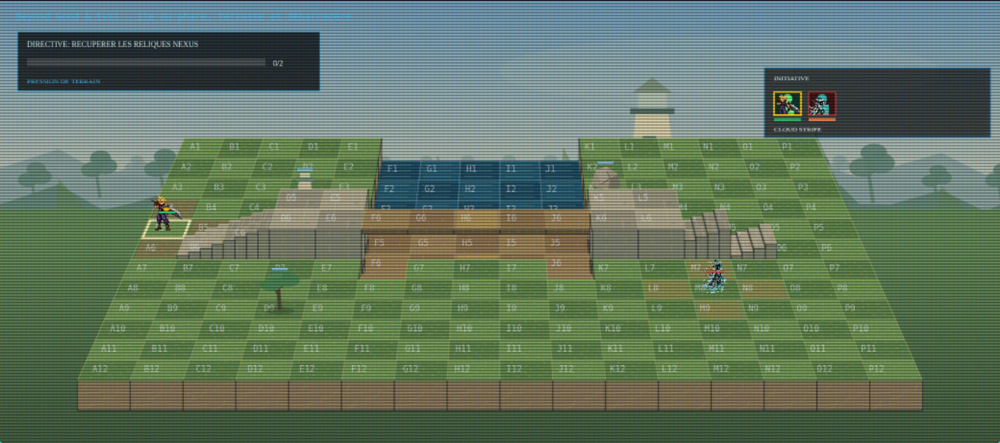
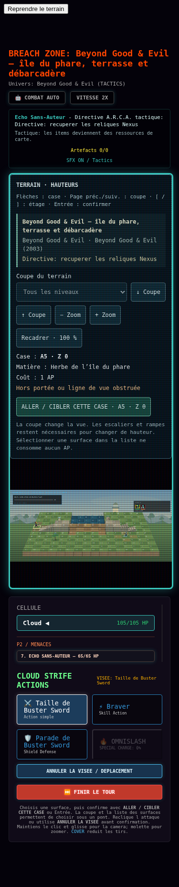
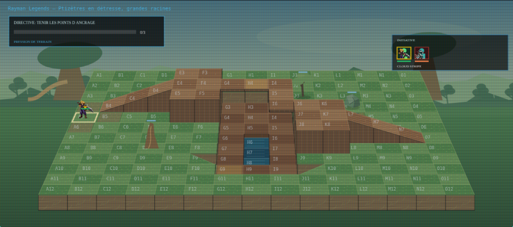
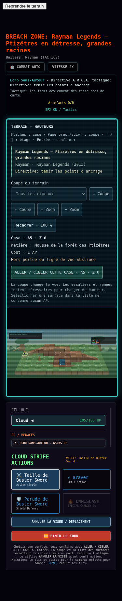
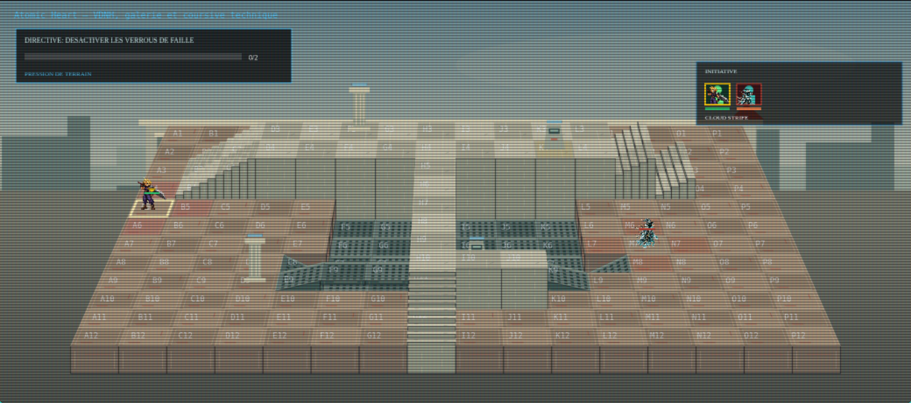
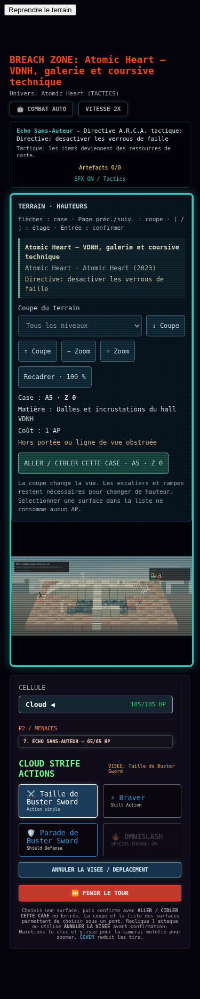
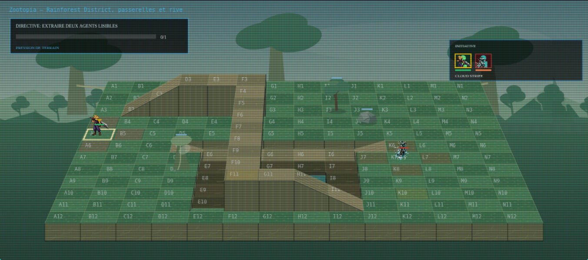
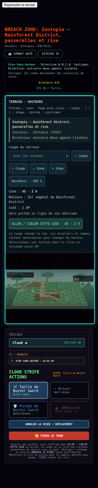

Terrains Tactics W17 — contrôle en jeu
Contrôle après gel des sources : 4 secteurs lancés depuis le mode personnalisé. Reliefs, matières et environnements dédiés sont visibles dans le vrai GameCanvas. Ces grilles sont des adaptations originales de lieux des œuvres citées ; elles ne sont pas des plans officiels reproduits à l’identique.
Lighthouse Island — grassy terrace, rocky stairs and lower wooden landing
Beyond Good & Evil · Beyond Good & Evil (2003)
Directive: recuperer les reliques Nexus

Vue mobile à 375 pixels

Teensies in Trouble — enchanted forest roots and broken upper route
Rayman · Rayman Legends (2013)
Directive: tenir les points d ancrage

Vue mobile à 375 pixels

VDNH Exhibition — stone gallery, service trench and low maintenance crossing
Atomic Heart · Atomic Heart (2023)
Directive: desactiver les verrous de faille

Vue mobile à 375 pixels

Rainforest District — canopy walkways, wet lower path and riverbank
Zootopia · Zootopia (2016)
Directive: extraire deux agents lisibles

Vue mobile à 375 pixels
